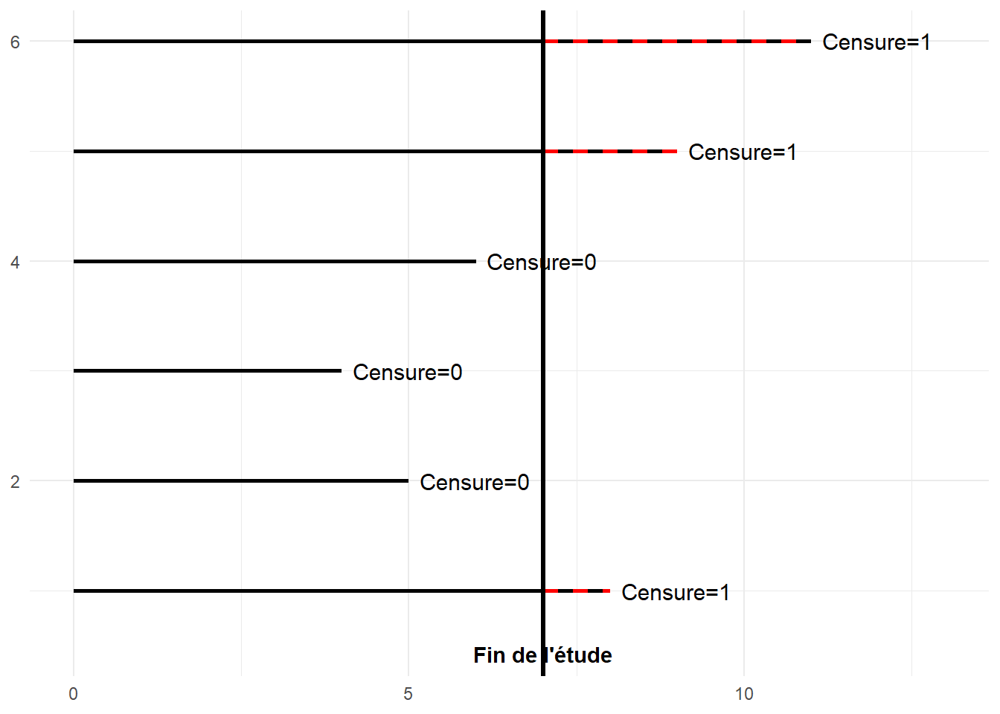
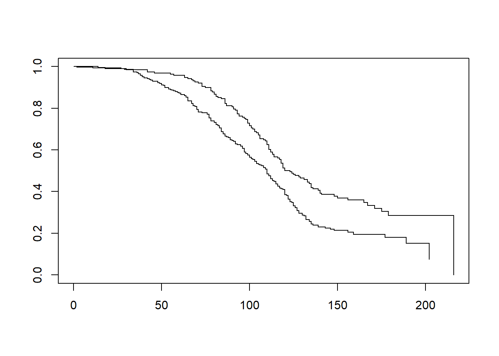
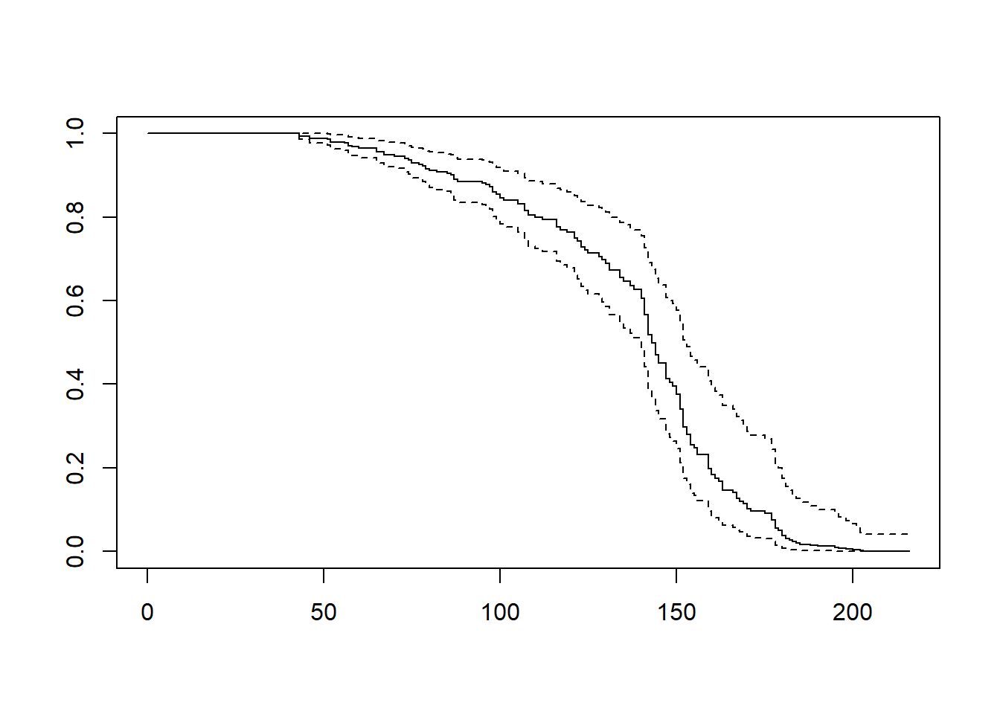
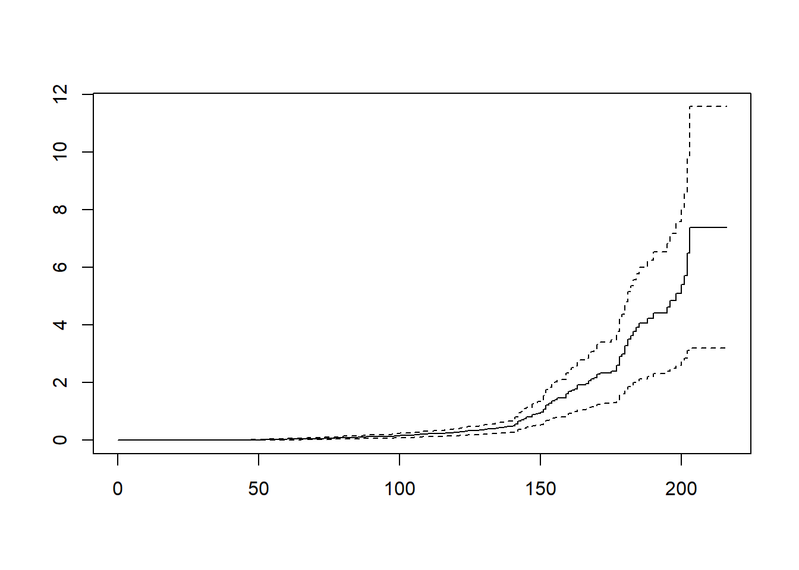

Warning: le package 'survival' a été compilé avec la version R 4.4.3Thème 7: Analyse de survie
Introduction
L’analyse de survie est une branche de la statistique qui étudie le Temps qu’une unité statistique (individu, machine, entreprise, un employé, une franchise…) passe dans un état donné. L’analyse de survie doit son nom à ses premières applications concernant l’analyse de la durée de vie des individus en épidémiologie et en médecine (patients, malades…). L’analyse de survie s’applique de nos jours à presque tous les domaines: marketing, finance, comptabilité, économie, ingénierie…
Exemples
Temps qu’un client reste abonné à un service offert par une entreprise (avant résiliation du contrat)
Temps qu’un employé au service de l’entreprise (avant licenciement ou avant de quitter l’emploi)
Temps qu’une entreprise demeure en opération sur le marché (avant de faire faillite)
Temps qu’un client demeure solvable (avant de déclarer faillite)
Temps qu’une machine demeure fonctionnelle (avant de tomber en panne)
Temps qu’une économie reste en croissance (avant la récession ou un crash boursier)
Contexte d’application
L’analyse de survie est utilisée pour les données longitudinales qui rapportent (relatent) l’occurrence ou l’apparition d’un événement.
Qu’est ce qu’un événement?
Un événement est un changement qualitatif ou quantitatif qui survient dans le temps.
Qualitatif:
Changement d’un statut: faillite, divorce, mariage, le fait d’avoir un enfant, l’interruption d’un contrat, promotion…
Quantitatif:
Un changement soudain et significatif (plus important que les variations observées habituellement):
-Crash boursier définit par une baisse de plus de 20% des indices boursiers.
-Un enrichissement: une augmentation de plus de 50% du revenu. Dans ce cas la définition de l’événement est très arbitraire.
Cadre général d’analyse
On s’intéresse au TEMPS qu’un individu passe dans un état donné. On observe chaque individu à partir du moment où il entre dans l’état jusqu’à ce que l’une des deux situations suivantes survient:
L’individu quitte l’état avant la fin de l’observation ( exemple: entreprise fait faillite)
L’étude se termine et l’individu est toujours dans l’état (exemple: entreprise encore en opération)
Note
NB : Le début de l’état n’est pas nécessairement le même pour chaque individu, mais il faut s’assurer que les critères utilisés pour définir le début et la fin d’un état soient les mêmes pour tous.
Exemple : Si on étudie la durée de vie des entreprises avant la faillite, il faut définir à quel moment une entreprise naît et à quel moment elle meurt (lorsqu’elle déclare faillite ou lorsque la faillite est approuvée légalement ?).
On notera par Temps, la variable «temps de survie» dans l’état. Pour chaque individu, la variable «Temps» est soit non censurée ou censurée.
Le temps est non censuré: si l’individu a quitté l’état avant la fin de l’observation. Dans ce cas, on observele vrai temps passé dans l’état.
Le temps est censuré: si l’individu est toujours dans l’état à la fin de l’observation. Dans ce cas, on n’observe qu’une borne inférieure du temps passé dans l’état. On notera par Censure, la variable qui indique si temps est censuré ou non.
Pourquoi l’approche de régression linéaire ne fonctionne pas?
Bien que la variable «Temps de survie» soit quantitative, le modèle de régression linéaire n’est pas adéquat pour comprendre les facteurs qui influencent le temps de survie des clients.
Le problème vient du fait que nous n’observons qu’une borne inférieure du temps de survie des données censurées.
Éliminer ces observations (les données censurées) de l’échantillon biaiserait le résultat et sous-estimerait le temps de survie des clients.

Mise en contexte
Netflix s’intéresse aux facteurs influençant le temps qu’un client reste abonné à son service de vidéos en ligne et en streaming. Les données d’un échantillon de 500 clients se trouvent dans le fichier «Netflix.sav». Certains clients sont encore abonnés et d’autres ont déjà quitté.
Variables
| Nom_Variable | Description |
|---|---|
| Temps | Durée en semaines de l’abonnement. Temps réel si le client a quitté, temps censuré sinon. |
| Censure | Indique si l’observation est censurée (1 = client encore abonné, 0 = client a quitté). |
| Age | Âge du client au début de l’abonnement. |
| Sexe | Sexe du client (0 = Homme, 1 = Femme). |
| Région | Région de résidence actuelle du client (valeurs possibles : 1 à 5). |
# Définir le répertoire de travail où se trouve le fichier de données
setwd("C:/Users/Fatou/OneDrive - HEC Montréal/PROJET SUPERVISE/Data")
# Importer le jeu de données
netflix <- read.csv("Netflix.csv", sep = ";", header = TRUE)
# Reconvertir les variables
netflix$censure <- as.integer(netflix$censure)
netflix$sexe <- as.factor(netflix$sexe)
netflix$region <- as.factor(netflix$region)Quelques statistiques descriptives
# Charger le package dplyr
library(dplyr)
# Calculer les statistiques descriptives de la variable Temps en fonction de la variable Censure
stat_descriptive_temps <- netflix %>%
group_by(censure) %>%
summarise(
N = n(),
Moyenne = round(mean(Temps, na.rm = TRUE), 2),
Mediane = round(median(Temps, na.rm = TRUE), 2),
Ecart_type = round(sd(Temps, na.rm = TRUE), 3),
Minimum = min(Temps, na.rm = TRUE),
Maximum = max(Temps, na.rm = TRUE)
)
stat_descriptive_temps# A tibble: 2 × 7
censure N Moyenne Mediane Ecart_type Minimum Maximum
<int> <int> <dbl> <dbl> <dbl> <int> <int>
1 0 334 96.2 98 33.8 2 216
2 1 166 131. 142 41.4 43 203334 clients parmi les 500 ne sont plus abonnés. Seulement 166 clients sont encore abonnés.
La moyenne de 131.18 semaines d’abonnement (pour les clients actuels) n’est pas représentative car elle désigne la durée moyenne minimale de l’abonnement de ces clients.
La moyenne de 96.16 semaines (pour les clients ayant rompu l’abonnement) n’est pas non plus représentative car ces clients ne forment pas un échantillon représentatif de la clientèle de l’entreprise.
En analyse de survie, un aspect aussi simple que l’estimation de la moyenne devient très difficile.
La médiane est beaucoup plus représentative du comportement de la variable Temps dans ce contexte d’analyse.
50% des clients qui ont quitté (censure=0) s’abonnent à moins de 98 semaines chez Netflix.
50% des clients qui n’ont pas encore quitté (censure=1) ont un abonnement d’au moins 142 semaines.
Analyse de survie
On peut utiliser l’analyse de survie pour :
Estimer le temps de survie dans un état donné.
Déterminer les variables qui influencent le temps de survie.
Prévoir le moment où l’individu va quitter cet état (complexe).
Il existe trois approches pour analyser les données de survie:
L’approche non paramétrique : Tables de survie et Kaplan-Meier
L’approche semi-paramétrique : Modèle à risques proportionnels de Cox.
L’approche paramétrique: Modèle de Weibull, log-normal, Gamma
Nous nous limiterons aux deux premières méthodes dans le cadre de ce cours.
Les fonctions utiles en analyse de survie
Rappel
Soit T une variable aléatoire représentant la durée de vie d’un individu. T désigne le temps passé dans cet état. En statistique, 2 fonctions sont utilisées pour décrire le comportement d’une variable aléatoire, soit sa fonction de densité et sa fonction de répartition.
La fonction de densité: 𝒇( 𝒕) = 𝑷(𝑻 = 𝒕) : 𝒍𝒂 𝒑𝒓𝒐𝒃𝒂𝒃𝒊𝒍𝒊𝒕é 𝒅𝒆 𝒎𝒐𝒖𝒓𝒊𝒓 à 𝒍′𝒊𝒏𝒔𝒕𝒂𝒏𝒕 𝒕.
La fonction de répartition: F (𝒕) = 𝑷(𝑻 ≤ 𝒕) : 𝒍𝒂 𝒑𝒓𝒐𝒃𝒂𝒃𝒊𝒍𝒊𝒕é 𝒅𝒆 𝒎𝒐𝒖𝒓𝒊𝒓 à 𝒍′𝒊𝒏𝒔𝒕𝒂𝒏𝒕 𝒕 𝒐𝒖 𝒂𝒗𝒂𝒏𝒕.
Les fonctions utiles en analyse de survie
En analyse de survie, les deux fonctions vues précédemment sont un peu modifiées.
- La fonction de survie: 𝑺(𝒕) = 𝑷(𝑻 ≥ 𝒕 )= 𝟏 − 𝑭 (𝒕)
La probabilité que le temps de survie soit supérieur ou égal à t.
- La fonction de risque (hasard fonction): h(𝒕) = 𝒇(𝒕) /𝒔(𝒕) = 𝑷 {𝑻 = 𝒕 |𝑻 ≥ 𝒕)
La probabilité de mourir à l’instant t, sachant que la personne a été vivante jusqu’à cet instant
C’est la fonction de risque qui sera modélisée avec le modèle de régression de Cox qu’on abordera plus loin.
En régression logistique, on modélise un Logit.
En analyse de survie, on modélise une fonction de risque.
Méthodes d’estimation non paramétriques
Estimation de la fonction de survie: l’approche non paramétrique
L’estimation de la fonction de survie est très utile pour:
Effectuer une analyse descriptive préliminaire pour comprendre le comportement du temps de survie.
Évaluer l’adéquation de certains modèles de régression.
Comparer différents groupes de l’échantillon.
Estimer certains indicateurs d’intérêts comme la médiane ou la moyenne
L’estimateur de Kaplan-Meier (KM)
L’estimateur de Kaplan-Meier est la méthode d’estimation d’une fonction de survie la plus utilisée.
Cette méthode permet d’estimer la fonction de survie sans devoir regrouper les observations par intervalles.
KM est la méthode à privilégier si le temps de survie est mesuré avec précision et/ou le nombre d’observations est faible.
C’est une méthodes d’estimation non paramétrique, dans le sens où on ne suppose pas que le temps de survie suit une loi en particulier.
Si l’échantillon ne contient aucune censure( uniquement les temps exact sont observés), l’estimateur KM donne la proportion des observations qui possède un temps de survie supérieur à un t (temps) donné.
s’il y a une censure l’estimateur de KM va ajuster les outputs en tenant compte de la censure.
L’estimateur de Kaplan-Meier (KM)
L’estimateur KM est donné par :
\[ \hat{S}(T) = \prod_{i: t_i < t} \left( 1 - \frac{d_i}{n_i} \right) = \left( 1 - \frac{d_1}{n_1} \right) \times \left( 1 - \frac{d_2}{n_2} \right) \times \dots \]
dᵢ: le nombre d’individus qui quittent l’état (résilient le contrat ) au temps tᵢ .
nᵢ: le nombre d’individus à risque au temps tᵢ (l’idée est semblable aux tables de survie).
(1-dᵢ /nᵢ): la probabilité conditionnelle de rester dans l’état un temps supérieur à tᵢ, étant donné qu’on s’est rendu jusque là.
library(survival)
# Créer un objet de survie
objet_survie2 <- Surv(time = netflix$Temps, event = 1 - netflix$censure)
# Ajuster le modèle de survie sans variable explicative
fit_km2 <- survfit(objet_survie2 ~ 1)Output R (KM)
# Résumer le modèle de survie
summary(fit_km2, head(10))Call: survfit(formula = objet_survie2 ~ 1)
time n.risk n.event survival std.err lower 95% CI upper 95% CI
10 499 1 0.998 0.002 0.994 1Exercice
Calculer la probabilité de survivre plus de 30 semaines.
# Calculer la probabilité de survie au-delà de 30 semaines
summary(fit_km2, times = 30)Call: survfit(formula = objet_survie2 ~ 1)
time n.risk n.event survival std.err lower 95% CI upper 95% CI
30 494 7 0.986 0.00525 0.976 0.996Réponse
Les individus à risque de quitter à ce moment = 493 = 500-n.event=500-7 (ils n’ont pas quitté ni n’ont été censurés).
7 individus ont quitté à moins de 30 semaines d’abonnement.
S(30)= (1-1/499)(1-1/498)(1-1/497)(1-1/496)(1-1/495)(1-1/494)(1-1/493)=1-7/493= 0.98597
# Afficher la courbe de survie de Kaplan-Meier plot(fit_km2)
Quelques stats avec KM
# Renvoie les temps où la survie atteint 75%, 50% et 25% (Q1, médiane, Q3)
quantile(fit_km2, probs = c(0.25, 0.5, 0.75))$quantile
25 50 75
84 114 171
$lower
25 50 75
80 110 143
$upper
25 50 75
90 119 NA Pour mesurer la tendance centrale de la variable d’intérêt, il est préférable d’utiliser la médiane ou les quartiles. S(171)= 25% S(114)=50% (médiane) S(84)=75%
Exemple: la probabilité de survivre plus de 171 semaines est de 25%.
Courbes de survie Homme/Femme
# On ajuste le modèle de survie sur la variable sexe
fit_km_sexe2 <- survfit(objet_survie2 ~ netflix$sexe)
summary(fit_km_sexe2, head(10) )Call: survfit(formula = objet_survie2 ~ netflix$sexe)
netflix$sexe=0
time n.risk n.event survival std.err lower 95% CI
1.00e+01 3.08e+02 1.00e+00 9.97e-01 3.23e-03 9.90e-01
upper 95% CI
1.00e+00
netflix$sexe=1
time n.risk n.event survival std.err lower 95% CI
10 191 0 1 0 1
upper 95% CI
1 # Afficher la courbe de survie de Kaplan-Meier
plot(fit_km_sexe2)
quantile(fit_km_sexe2, probs = c(0.25, 0.5, 0.75))$quantile
25 50 75
netflix$sexe=0 78 110 135
netflix$sexe=1 98 123 216
$lower
25 50 75
netflix$sexe=0 71 102 128
netflix$sexe=1 91 114 171
$upper
25 50 75
netflix$sexe=0 84 115 177
netflix$sexe=1 105 136 NAExercice:
Commentez les résultats.
Comparaison de deux groupes
Les hypothèses du test sont identiques à celle énoncées dans le cas des tables de survie.
H₀ : S fₑₘₘₑ(t)= S hₒₘₘₑ(t)
H₁ : S fₑₘₘₑ(t) ≠ S hₒₘₘₑ(t) pour au moins une valeur de t
Log-rank : suppose que le ratio des fonctions de risques des 2 groupes est constant pour toute la période d’intérêt.
Breslow (Wilcoxon): accorde plus de poids aux différences observées dés le début qu’aux différences observées plus loin dans le temps. Il est donc le plus puissant dans un contexte où les différences sont plus prononcées au tout début.
Terone-Ware: plus de poids au début.
On a effectué le test du Log-Rank plus haut. Ici, on s’intéresse au test test de Breslow et celui de Tarone-Ware.
# Test de Breslow
survdiff(objet_survie2 ~ netflix$sexe, rho = 1)Call:
survdiff(formula = objet_survie2 ~ netflix$sexe, rho = 1)
N Observed Expected (O-E)^2/E (O-E)^2/V
netflix$sexe=0 309 145.9 120.2 5.48 17.6
netflix$sexe=1 191 69.4 95.1 6.93 17.6
Chisq= 17.6 on 1 degrees of freedom, p= 3e-05 # Test de Tarone-Ware
survdiff(objet_survie2 ~ netflix$sexe, rho = 0.5)Call:
survdiff(formula = objet_survie2 ~ netflix$sexe, rho = 0.5)
N Observed Expected (O-E)^2/E (O-E)^2/V
netflix$sexe=0 309 175.3 145 6.21 17.3
netflix$sexe=1 191 88.6 119 7.61 17.3
Chisq= 17.3 on 1 degrees of freedom, p= 3e-05 Exercice
Comparer les fonctions de survies des différentes régions. Commentez les résultats.
Méthode d’estimation semi-paramétrique: Modèle de Cox
Introduction au modèle de COX
Le modèle de Cox est un modèle de régression semi-paramétrique, appelé aussi, modèle à risques proportionnels (proportional Hazard model).
Le modèle de Cox permet d’estimer l’effet des variables explicatives sur la variable aléatoire T sans postulat de distribution particulière (sans spécifier une loi de distribution) pour celle celle-ci.
C’est un modèle semi-paramétrique car seulement une partie du modèle doit être spécifiée.
Le modèle de Cox est similaire au modèle de régression logistique mais évalue la relation entre le temps de survie et les variables explicatives.
C’est le modèle le plus utilisé pour analyser les données de survie.
Description du modèle
𝒉(𝒕|𝒙₁, 𝒙₂, … , 𝒙ₖ) est la fonction de risque pour les individus ayant les caractéristiques spécifiques (𝒙₁, 𝒙₂, … , 𝒙ₖ).
Le modèle de Cox s’écrit: \[ h(t | x_1, x_2, \dots, x_k) = h_0(t) \times \exp(\beta_1 x_1 + \beta_2 x_2 + \dots + \beta_k x_k) \] est une fonction de risque de base qui n’ a pas besoin d’être spécifié.
La fonction de risque est donc le produit de deux parties distinctes:
une partie sans paramètres, qui dépend uniquement du temps
et une partie avec paramètres qui dépend uniquement des variables explicatives.
Remarques:
Lorsque toutes les variables explicatives prennent la valeur 0, on retrouve 𝒉₀ 𝒕 (cette valeur est équivalente à « l’ordonnée à l’origine en régression linéaire »).
ex p(β₁x₁ + β₂x₂ + … + βₖxₖ modélise l’effet d’un changement des valeurs des variables explicatives sur la fonction de risque de base”)
Interprétation des paramètres R: Modèle de Cox avec toutes les variables explicatives
Si on compare le ratio des risques de deux individus ayant les mêmes valeurs pour les variables explicatives, à l’exception de la variable x1, qui diffère d’une unité, on obtient ce qui suit:
\[ \frac{h(t | x_1 + 1, x_2, \dots, x_k)}{h(t | x_1, x_2, \dots, x_k)} = \frac{h_0(t) \exp\left(\beta_1 (x_1 + 1) + \beta_2 x_2 + \dots + \beta_k x_k \right)}{h_0(t) \exp\left(\beta_1 x_1 + \beta_2 x_2 + \dots + \beta_k x_k \right)} = e^{\beta_1} \]
Interprétation de β₁ :
lorsque x1 augmente d’une unité, le risque est multiplié par 𝒆ᵝ¹ (ratio de risque).
Résultats:
Le ratio de risque ne dépend pas du temps.
Le ratio de risque est constant par rapport au temps. (l’effet de la variable explicative est stable dans le temps).
R: Modèle de Cox avec toutes les variables explicatives
# Ajuster le modèle de Cox avec les variables âge, sexe et région
cox <- coxph(Surv(Temps, censure) ~ age + sexe + region, data = netflix, ties = "exact")
# Résumer le modèle de Cox
summary(cox)Call:
coxph(formula = Surv(Temps, censure) ~ age + sexe + region, data = netflix,
ties = "exact")
n= 500, number of events= 166
coef exp(coef) se(coef) z Pr(>|z|)
age -0.04314 0.95778 0.00947 -4.555 5.23e-06 ***
sexe1 -0.48278 0.61706 0.17045 -2.832 0.00462 **
region2 -0.40384 0.66775 0.27041 -1.493 0.13532
region3 -0.04773 0.95339 0.25291 -0.189 0.85031
region4 -0.41091 0.66304 0.25774 -1.594 0.11087
region5 -0.16652 0.84661 0.25633 -0.650 0.51594
---
Signif. codes: 0 '***' 0.001 '**' 0.01 '*' 0.05 '.' 0.1 ' ' 1
exp(coef) exp(-coef) lower .95 upper .95
age 0.9578 1.044 0.9402 0.9757
sexe1 0.6171 1.621 0.4418 0.8618
region2 0.6677 1.498 0.3930 1.1345
region3 0.9534 1.049 0.5808 1.5651
region4 0.6630 1.508 0.4001 1.0988
region5 0.8466 1.181 0.5123 1.3992
Concordance= 0.637 (se = 0.026 )
Likelihood ratio test= 29.62 on 6 df, p=5e-05
Wald test = 27.97 on 6 df, p=1e-04
Score (logrank) test = 28.22 on 6 df, p=9e-05# Afficher la courbe de survie estimée à partir du modèle de Cox
plot(survfit(cox))
# Afficher la fonction de risque cumulée
plot(survfit(cox), fun = "cumhaz")
Interprétation
On estime, toutes choses étant égale par ailleurs (si tout demeure constant):
À tout moment dans le temps, le risque qu’une femme (sexe=1) mette fin à son contrat est exp(-0.519)=0.595 fois le risque d’un homme (le risque est 40.5% inférieur (1-0.595=0.405)).
Pour chaque augmentation d’une année de l’âge lors de l’abonnement, le risque de quitter diminue de 4.3% (exp(-0,043)=0.957) à tout moment dans le temps.
À tout moment dans le temps, le risque qu’un client de la région 2 résilie son contrat est exp(-0.329)=0.729 fois celui de la région 1 (référence).
Exercice
Testez les significativité des paramètres dans le modèle au niveau 5% et interprétez le reste des coefficients estimés.